Schema Window
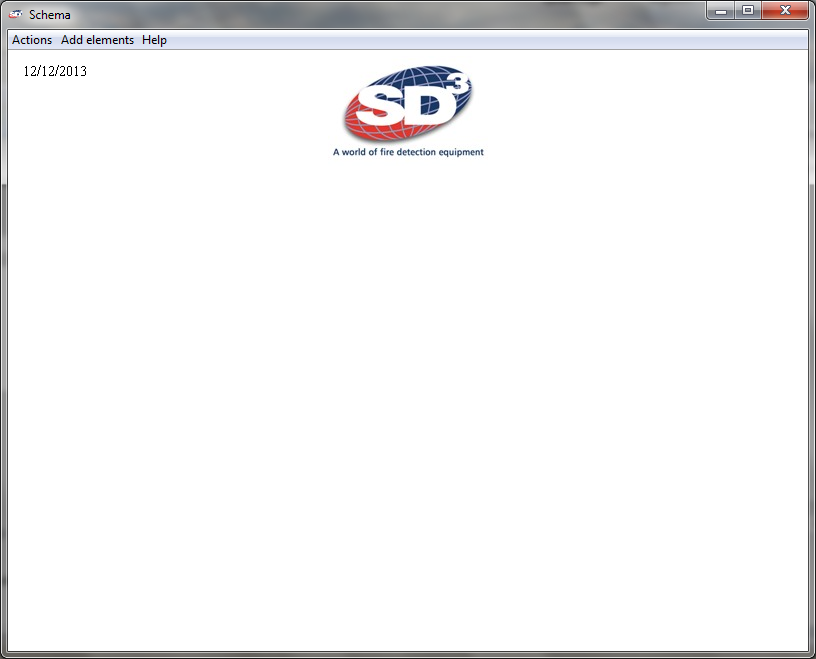From this window, you can create a simple and clear from your quote schema.
Actions
You have at your disposal, different actions to help you build your schema:
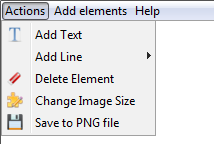Text
You can add text by choosing the font size, color and style (bold, italic).
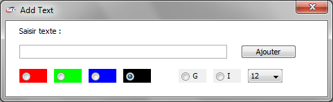Line
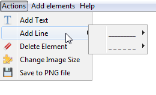You can add two line styles: normal or dotted. 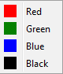
To draw your line, select the line style and color, then place on your diagram and made a left click.
Without releasing the click, scroll to the page and then release the mouse button.
Example: 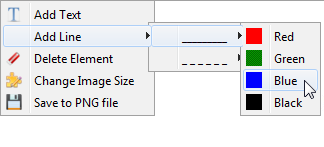
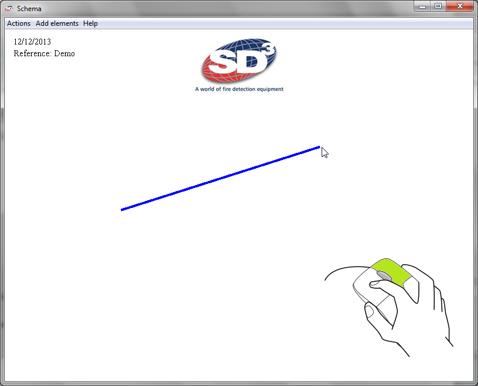Delete element
You can delete an element of your schema.
To do this, simply click the Delete action element, then left-click on this element.
Example: 
Change/Add element
You can insert an element to your diagram at any time. To do this, go to the "Actions" menu -> Change Image Size.
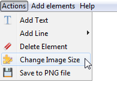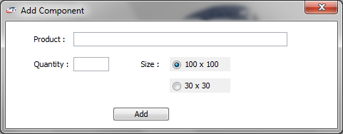
Save
At any time you can save your schema in PNG format. To do this, go to the "Actions" menu -> Save to PNG File.
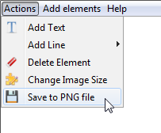Add Elements
You can add different elements to your drawing:
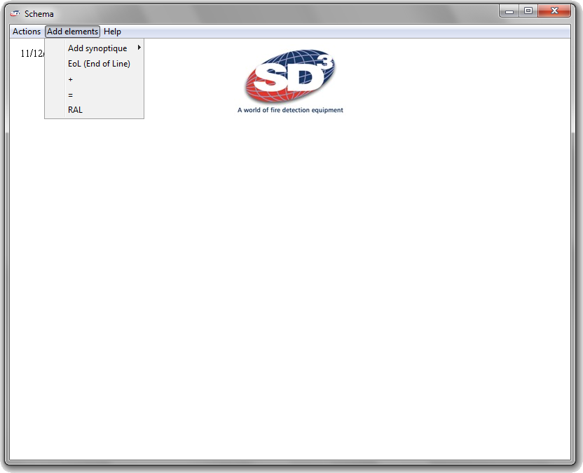Add synoptic
Through this, you can insert an existing diagram.
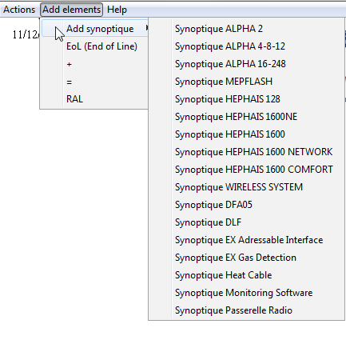Help
You can read this manual directly from the QSoft software and your web browser.
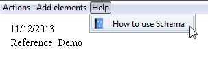